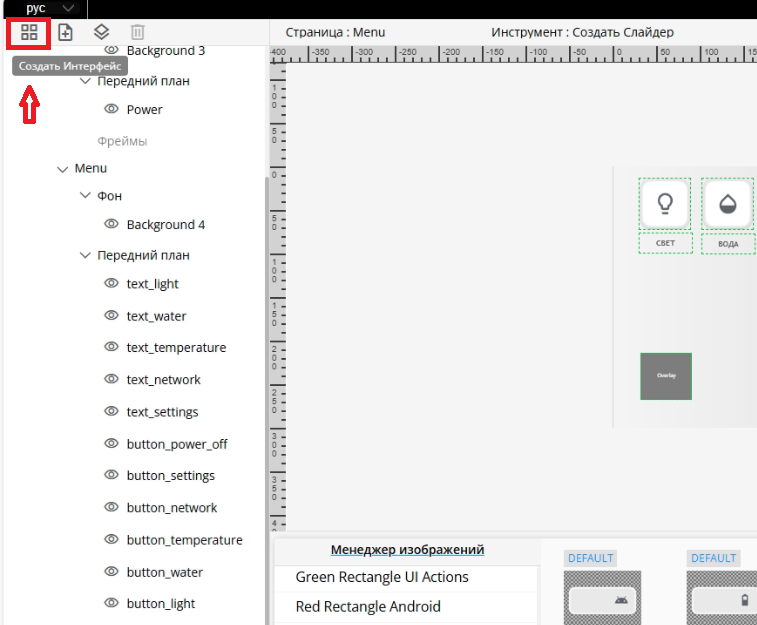

UI-Designer
UI-Designer– это инструмент для создания и настройки пользовательских интерфейсов с помощью drag-and-drop (перетаскивания). Пользователь может управлять структурой интерфейса, настраивая страницы и элементы на страницах, такие как фоны, текст, кнопки, слайдеры, списки, Оверлеи(подстраницы). UI-Designer интерфейсов позволяет легко изменять свойства каждого элемента через панель настроек. Для доступа к UI-Designer введите в браузере IP-Controller:8000
Обзор
UI-Designer служит для создания интерфейсов панели управления. Все имена объектов являются их ID, которые используются для управления состоянием этих элементов. При создании каждого элемента интерфейса тщательно продумывайте их имена, это упростит взаимодействие с интерфейсом в U-Logic. Имена объектов могут дублироваться, но в таком случае состояние, отправленное из U-Logic, будет применяться ко всем элементам с одинаковым именем. Не создавайте объекты разных типов с одинаковыми именами. Используйте только английские символы для имен объектов.
Основные элементы:
Дерево интерфейса – служит для навигации по созданным элементам.
Холст – основная рабочая область (пространство) для создания интерфейсов.
Панель свойств элементов – служит для изменения размеров, положения, стилей и других параметров
Менеджер изображений – загрузка и выбор изображений для использования в интерфейсе.
Верхняя панель
В верхней панели интерфейса расположены следующие элементы управления:
Выбор языка — позволяет переключаться между доступными языками: английским и русским.
Предпросмотр — отключает возможность редактирования интерфейсов, позволяя оценить их финальный вид.
Опубликовать — отправляет внесённые изменения в UI-Panel, делая их доступными для использования.
Сохранить — фиксирует текущие изменения в UI-Designer, обеспечивая их сохранность для дальнейшей работы.
Левая панель

На левой панели расположены следующие кнопки управления элементами интерфейса:
Создать интерфейс
Создать страницу
Создать оверлей
Удалить
Создать интерфейс

При нажатии на кнопку «Создать интерфейс» открывается форма, в которой предлагается:
Ввести название интерфейса
Примечание
Имя интерфейса выступает в роли ID, который используется для взаимодействия с интерфейсом в U-Logic. Рекомендуется использовать латинские символы без пробелов (как для самого интерфейса, так и для всех элементов).
Выбрать соотношение сторон:
4:3
16:9
16:10
Пользовательское (возможность задать произвольные параметры).
Примечание
Примечание: Все указанные свойства можно изменить позже.
Создать страницу
Добавляет новую страницу на выбранном интерфейсе.
Создать оверлей
Добавляет оверлей на выбранном интерфейсе.
Оверлей — это элемент, накладываемый поверх основной страницы. Он помогает упростить структуру интерфейса, избегая создания множества отдельных страниц, и позволяет использовать одни и те же элементы в разных частях системы.
Фрейм – это контейнер, в котором отображаются оверлеи. Он позволяет повторно использовать логику взаимодействия и функциональные элементы. Фрейм также может сохранять пропорции оверлея, корректно отображаясь в заданных ему размерах, или, при необходимости, делать оверлей внутри себя прокручиваемым, если его содержимое превышает доступное пространство.
Назначение фрейма:
Определяет область, в которой будет размещаться оверлей.
Позволяет уменьшить количество страниц за счёт добавления дополнительных слоёв интерфейса, где можно повторно использовать логику взаимодействия.
Примечание
Один и тот же оверлей может быть показан в разных фреймах на любых страницах.
Удалить
Удаляет выбранный элемент интерфейса.
Дерево интерфейса
Также на левой панели расположено дерево в котором отображается структура и элементы интерфейса и служит для навигации по элементам интерфейса. Пользовательский интерфейс может содержать страницы и оверлеи, которые могут содержать:
Фон
Передний план
Фреймы
В дереве интерфейсов доступны следующие функции:
Добавление элементов – рядом с типом элемента интерфейса расположен значок «+», нажав на который, можно добавить новую страницу или оверлей.
Скрытие элементов – слева от каждого элемента находится значок «глаза», при нажатии на него элемент скрывается.
Сворачивание и разворачивание разделов – группы элементов в дереве можно сворачивать и разворачивать для удобства навигации.
Центральная панель

Центральная панель содержит:
Холст для редактирования выбранной страницы
Менеджер изображений для выбора изображения из библиотек
Холст
Холст отображает выбранную страницу в дереве проекта и элементы, расположенные на этой странице
В верхней части холста отображается:
Имя выбранной страницы или оверлея
Выбранный инструмент
Также в верхней части холста доступны следующие кнопки:
Создать виджет
Создать Кнопку
Создать Список
Создать Слайдер
Создать Фон
Создать Фрейм
Для создания виджета выделите область на рабочем пространстве
Выделение: Позволяет выбрать один или несколько элементов интерфейса для редактирования.
Приблизить: Увеличивает масштаб рабочей области.
Отдалить: Уменьшает масштаб рабочей области.
Исходный масштаб: Сбрасывает масштабирование к стандартному значению.
Инструменты выравнивания: Автоматически выравнивает выбранные элементы в зависимости от выбранной опции.
Центрировать по горизонтали
Центрировать по вертикали
Выровнять по левому краю
Выровнять по правому краю
Выровнять по верхнему краю
Выровнять по нижнему краю
Интсрументы распределения: Распределяет выбранные элементы в зависимости от выбранной опции.
Распределить по горизонтали
Распределить по вертикали
Интервал: Задать интервал между элементами для распределения
Группировать элементы: Объединяет несколько выбранных элементов в одну группу.
Разгруппировать элементы: Отменяет группировку.
Показывать имена элементов: Отображает имена элементов на рабочей области.
Рабочая область (пространство) - это рабочая зона UI-Designer для размещения элементов
Менеджер изображений

Левая часть менеджера изображений представляет из себя список библиотек, содержащих элементы. В правой части отображается содержимое выбранной библиотеки. Над каждым элементом отображается его текущее состояние. Чтобы изменить состояние элемента и соотвественно его изображение, нажмите по нему. Если у элемента нет изображения для других состояний, то ничего не произойдет.
Если нажать на элемент несколько раз, то отобразится изображение состояния элемента.
Также отобразится его название, размер изображения, размер файла, состояние, отображаемого изображения элемента. Можно выбрать фон показываемого изображения. Доступны следующие варианты:
black - Черный задний фон изображения
white - Белый задний фон изображения
grid - Шахматный задний фон изображения (Фон прозрачности)
Слева и справа от изображения находятся стрелочки, позволяющий переключиться на следующее или предыдущее изображение состояния элемента. При отсутствии других изображений состояния элемента ничего не произойдет.
При нажатии на «Менеджер изображений» появится следующее окно:
В левой части представлен список библиотек
В центре представлены элементы выбранной в левой части библиотеки, кнопка добавления пользовательских изображений в библиотеку и строка для поиска библиотеки
В правой части представлена информация о группе (элементе библиотеки), а именно название элемента, его изображение в следующих состояниях:
DEFAULT: Состояние по умолчанию. Отображается на начальном экране пользовательского интерфейса. Это изображение статично на интерфейсе, пока не будет изменено нажатием или другим событием.
SELECTED: Отображается во время нажатия на кнопку.
PRESSED: Отображается после отправки соответствующей команды из U-Logic.
DISABLED: Отображается, когда кнопка больше не активна.
Для каждого изобажения элемента указан размер (ширина x высота) в пикселях и его разамер (КБайт)
Для удаления изображения элемента требуется навестить на него, нажать на появившуюся снизу кнопку удаления и подтвердить удаление
Правая панель
На правой панели отображаются свойства элемента. Панель Свойств предоставляет возможность редактировать параметры элементов интерфейса:
Имя - Задает название элемента.
Скрыть - Позволяет скрыть элемент с пользовательского интерфейса.
Положение и размер элемента
X - Изменение значения X перемещает элемент по горизонтали страницы.
Y - Изменение значения Y перемещает элемент по вертикали страницы.
Ширина - Изменение ширины элемента.
Высота - Изменение высоты элемента.
Настройка текста
Текст – Добавляет текст для идентификации кнопки, страницы или интерфейса.
Размер шрифта – Определяет размер текста. Допустимым размером шрифта является число от 0 (текст не отображается) и больше.
Цвет шрифта - Определяет цвет и прозрачность отображаемого текста. Цвет можно выбрать при помощи палитры цветов или ввода цвета вручную в формате HEX, RGBA, HSLA.
Выравнивание текста – Регулирует положение текста внутри элемента интерфейса. Текст можно расположить в одном из следующих положений: верхний левый, верхний средний, верхний правый, центр слева, по центру, центр справа, нижний левый, нижний средний или нижний правый.
Отступ текста – Задаёт расстояние между текстом и границами элемента интерфейса. Отступ регулируется в пикселях и может быть установлен отдельно для каждой стороны: верхний, нижний, левый и правый.
Шрифт – Задает шрифт текста, отображаемого в пользовательском интерфейсе.
Жирный шрифт – Применяет полужирное начертание текста.
Настройка оформления
Цвет фона - Определяет цвет и прозрачность отображаемого фона. Цвет можно выбрать при помощи палитры цветов или ввода цвета вручную в формате HEX, RGBA, HSLA.
Стиль границы - Определяет вид границы элемента в пользовательском интерфейсе. Возможные значения:
Сплошной
Пунктирный
Точечный
Двойной
Канавка
Гребень
Вдавленный
Выпуклый
Ширина границы - Задаёт ширину границы элемента пользовательского интерфейса.
Цвет границы - Определяет цвет и прозрачность отображаемой границы. Цвет можно выбрать при помощи палитры цветов или ввода цвета вручную в формате HEX, RGBA, HSLA.
Радиус закругления углов - Регулирует степень скругления углов границ элемента пользовательского интерфейса.
Настройка изображения
Изображение - Отображает в виде миниатюры изорабежние, добавленное в качестве фона страницы. Для добавления изображения найдите изображение для фона в менеджере изображений и перенесите его в поле «Изображение».
Размер изображения - Определяет отображение изображение в элементе. Доступны следующие варианты:
Вписать - Вписывает изображение под размер элемента, сохраняя пропорции.
Растянуть - Растягивает изображение для заполнения области элемента, игнорируя пропорции.
Изображения состояния Default, Pressed, Selected, Disabled можно изменить вручную. Для этого необходимо выбрать изображение в соответствующем окне. Изображения состояния отображаются в виде миниаютр в панели свойств
Настройка кнопки
Состояние кнопки - Определяет отображаемое состояние кнопки по умолчанию.
Повтор нажатия при удержании - Определяет возможность повторной нажатия на кнопку при удержании.
Частота повтора (сек) - Определяет длительность удержания (в секундах) кнопки для повторного нажатия.
Кнопка переключения - Делает формат кнопки переключаемым. Кнопка формата переключения имеет два состояния:
Default
Pressed
Оверлей
Оверлей - Выбор оверлея для фрейма, который будет отображаться поверх фрейма.
Отображение оверлея - Определяет отображение оверлея в фрейме:
Растянуть
Прокручиваемый
Слайдер
Ориентация - Определяет ориентацию слайдера:
вертикально - Движение от низа к верху, где нижняя часть – минимальное значение, а верхняя – максимальное
горизонатльно - Движение слева направо, где левая сторона – минимальное значение, а правая – максимальное
Отправлять команды после:
Отпускание - Отправка команды после отпускания ручки слайдера.
Перетаскивание - Отправка команд при перемещении ручки слайдера.
Шаги - Задает количество команд, которые могут быть выполнены с помощью слайдера. Например, для регулятора яркости можно установить 100 шагов (от 0% до 100%).
Цвет ручки - Определяет цвет и прозрачность ручки слайдера. Цвет можно выбрать при помощи палитры цветов или ввода цвета вручную в формате HEX, RGBA, HSLA.
Радиус ручки - Регулирует размер ручки слайдера.
Цвет заполненной полоски - Определяет цвет и прозрачность заполненной полоски, который указывает текущий уровень параметра, контролируемого слайдером. Цвет можно выбрать при помощи палитры цветов или ввода цвета вручную в формате HEX, RGBA, HSLA.
Цвет пустой полоски - Определяет цвет и прозрачность пустой полоски. Цвет можно выбрать при помощи палитры цветов или ввода цвета вручную в формате HEX, RGBA, HSLA.
Толщина полоски - Задает ширину вертикального слайдера и высоту горизонтального.
Создание и управление элементами интерфейса
Создание интерфейса
При первом запуске UI-Designer для создания интерфейса нажмите кнопку Создать Интерфейс

После нажатия, в появившемся окне необходимо ввести уникальное название интерфейса и настроить соотношение сторон создаваемого интерфейса
Примечание
Имена всех элементов используются как ID в U-Logic поэтому должны быть указаны на латинице.
Создание страницы
После создания интерфейса появится холст, где можно увидеть структуру страницы и её элементы. Каждая страница должна иметь уникальное имя, которое будет использоваться как ID для взаимодействия с U-Logic. На странице можно создавать следующие элементы: Фон, Кнопки, Слайдеры, Списки и Фреймы. Каждый элемент и созданная страница отображаются в дереве проекта, где корнем выступает интерфейс. Для добавления новой страницы используйте кнопку Добавить страницу, расположенную в панели над деревом проекта
Чтобы добавить элемент на страницу, нажмите кнопку «Создать Виджет в панели над холстом.
Откроется выпадающий список с типами доступных элементов. Выберите нужный элемент, затем зажмите левую кнопку мыши и выделите область на холсте, где должен появиться выбранный элемент. Элемент будет создан в выбранной области.
Кнопки можно создавать и другим способом — через Менеджер изображений. В Менеджере изображений находятся готовые изображения кнопок, которые можно использовать в проекте. Просто выберите нужное изображение и перетащите его на холст. При этом, если удерживать клавишу Shift, будет создан элемент Фон, покрывающий весь холст. Для каждого состояния кнопки можно сменить изображение, для этого нужно выбрать кнопку на холсте и перетащить изображение из «менеджера изображений» в нужное состояние в панели свойств.
Чтобы создать Фрейм для Оверлея:
Нажмите на кнопку создания виджета в панели инструментов холста и выберите «Создать Фрейм».
В окне свойств можно настроить размеры и местоположение фрейма, а также указать оверлей и его отображение.
Создание оверлея
В панели интерфейсов выберите название нужного интерфейса. В панели инструментов дерева, нажмите Добавить Оверлей. Также можно создать оверлей в дереве интерфейса, нажав на знак «+» напротив «Оверлей». Настроить размеры оверлея можно в окне свойств.
Примечание
Один и тот же оверлей может быть показан в разных фреймах на любых страницах.
Добавление фона
Выберите нужное изображение в менеджере изображений и перетащите его на холст. При этом, удерживая клавишу Shift.
Изменение изображения кнопки
Чтобы изменить изображение кнопки любого состония можно следующими способами:
Выбрать кнопку на холсте и перетащить изображение из менеджера изображений в поле изображения нужного состояния в панели свойств.
Или же можно перетащить изображение из менеджера изображений на сам элемент на холсте, однако в этом случае заменятся все изображения состояний кнопки.
Управление проектом
Сохранение и публикация проекта
После того как дизайн интерфейса готов, интерфейс можно загрузить на UI-Panel. Для этого сначала необходимо сохранить проект нажав на кнопку Сохранить, затем нажать кнопку Опубликовать для отправки проекта на панель.

Настройка интерфейса в U-logic
Откройте U-Logic и настройте узлы UI-Panel для запуска созданного интерфейса. Подробнее смотреть в документации U-Logic.
Откройте UI-Panel для работы с загруженным интерфейсом по адресу
IP-Controller:5001.
Терминология
Ниже приведены основные термины и концепции, используемые в UI-Designer
Интерфейс
Совокупность элементов управления, с которыми взаимодействует пользователь. Интерфейс определяет внешний вид и поведение системы.
Холст
Холст (Рабочее пространство) используется для определения внешнего вида страниц и расположения элементов на них. Каждая страница обладает собственным рабочим пространством
Страница
Ключевой элемент интерфейса, представляющий собой основное рабочее пространство для взаимодействия пользователя
Оверлей
Оверлей — это элемент, накладываемый поверх основной страницы. Он помогает упростить структуру интерфейса, избегая создания множества отдельных страниц, и позволяет использовать одни и те же элементы в разных частях системы.
Фрейм
Фрейм – это контейнер, в котором отображаются оверлеи. Он позволяет повторно использовать логику взаимодействия и функциональные элементы. Фрейм также может сохранять пропорции оверлея, корректно отображаясь в заданных ему размерах, или, при необходимости, делать оверлей внутри себя прокручиваемым, если его содержимое превышает доступное пространство.
Назначение фрейма:
Определяет область, в которой будет размещаться оверлей.
Позволяет уменьшить количество страниц за счёт добавления дополнительных слоёв интерфейса, где можно повторно использовать логику взаимодействия.
Кнопка
Элемент интерфейса, предназначенный для выполнения действий при нажатии. Они могут содержать текст или изображения. Подробнее о настройке текста или изображения можно узнать в разделе «Обзор/Правая панель». Также кнопка может менять состояние в зависимости от состояния.
Кнопка может иметь следующие состояния:
DEFAULT: Состояние по умолчанию. Отображается на начальном экране пользовательского интерфейса. Это изображение статично на интерфейсе, пока не будет изменено нажатием или другим событием.
SELECTED: Отображается во время нажатия на кнопку.
PRESSED: Отображается после отправки соответствующей команды из U-Logic.
DISABLED: Отображается, когда кнопка больше не активна.
Список
Элемент, предназначенный для отображения структурированной информации в виде набора «Ключ Значение», которые визуально располагаются друг под другом. Список определяет только внешний вид, но не управляет содержимым списка.
Слайдер
Элемент, позволяющий изменять значение в определенном диапазоне. Может , например, использоваться для регулировки громкости, яркости, выбора значений или параметров. Слайдеры могут быть горизонтальными или вертикальными.
Фон
Визуальный элемент страницы, создающий основу для её оформления.
Горячие клавиши
Использование горячих клавиш в UI-Designer помогает работать быстрее. Ниже приведен список горячих клавиш UI-Designer:
Рабочее пространство
Сочетание |
Описание |
|---|---|
↑ |
Переместить рабочее простраство вверх |
↓ |
Переместить рабочее простраство вниз |
← |
Переместить рабочее простраство влево |
→ |
Переместить рабочее простраство вправо |
U |
Выбрать инструмент «Создать Виджет (Кнопку)» |
L |
Выбрать инструмент «Создать Виджет (Список)» |
I |
Выбрать инструмент «Создать Виджет (Слайдер)» |
P |
Выбрать инструмент «Создать Виджет (Фон)» |
M |
Выбрать инструмент «Создать Виджет (Фрейм)» |
F |
Выбрать инструмент «Выделение» |
+ |
Приблизить рабочее пространство |
- |
Отдалить рабочее пространство |
0 |
Привести рабочее пространство в исходный масштаб |
Элементы
Сочетание |
Описание |
|---|---|
Ctrl + C |
Скопировать выделенный элемент |
Ctrl + V |
Вставить скопированный элемент |
Ctrl + X |
Вырезать выделенный элемент |
E |
Центрировать выдленные элементы по горизонтали |
Q |
Центрировать выделенные элементы по вертикали |
A |
Выровнять выделенные элементы по левому краю |
D |
Выровнять выделенные элементы по правому краю |
W |
Выровнять выделенные элементы по верхнему краю |
S |
Выровнять выделенные элементы по нижнему краю |
G |
Сгруппировать выделенные элементы |
Shift + G |
Разгруппировать элементы |
B |
Показывать / Скрывать имена элементов |
1 |
Включить / Выключить режим предпросмотра |
Escape |
Выключить режим предпросмотра |
Ctrl + P |
Опубликовать проект в UI-Panel |
Ctrl + S |
Сохранить текущие изменения |
Shift + «+» |
Увеличить размер выделенного элемента |
Shift + «-» |
Уменьшить размер выделенного элемента |
↑ |
Переместить выделенный элемент вверх на единицу |
↓ |
Переместить выделенный элемент вниз на единицу |
← |
Переместить выделенный элемент влево на единицу |
→ |
Переместить выделенный элемент вправо на единицу |
Delete |
Удалить выделенный элемент |
Приблизить рабочее пространство можно также, зажав клавишу Alt и используя колесико мыши
Для перемещения по рабочему пространству вы также можете зажать клавишу Space и, удерживая кнопку мыши, перемещать курсор.